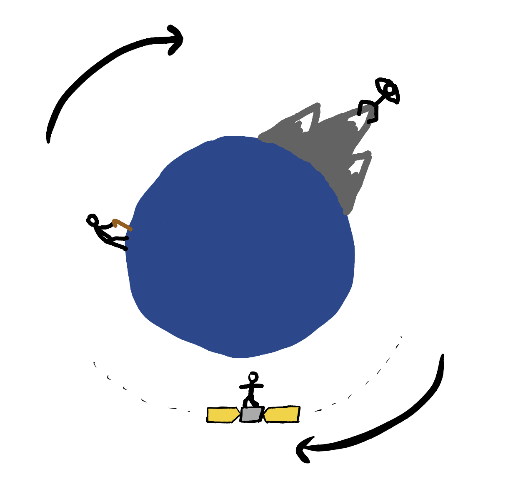
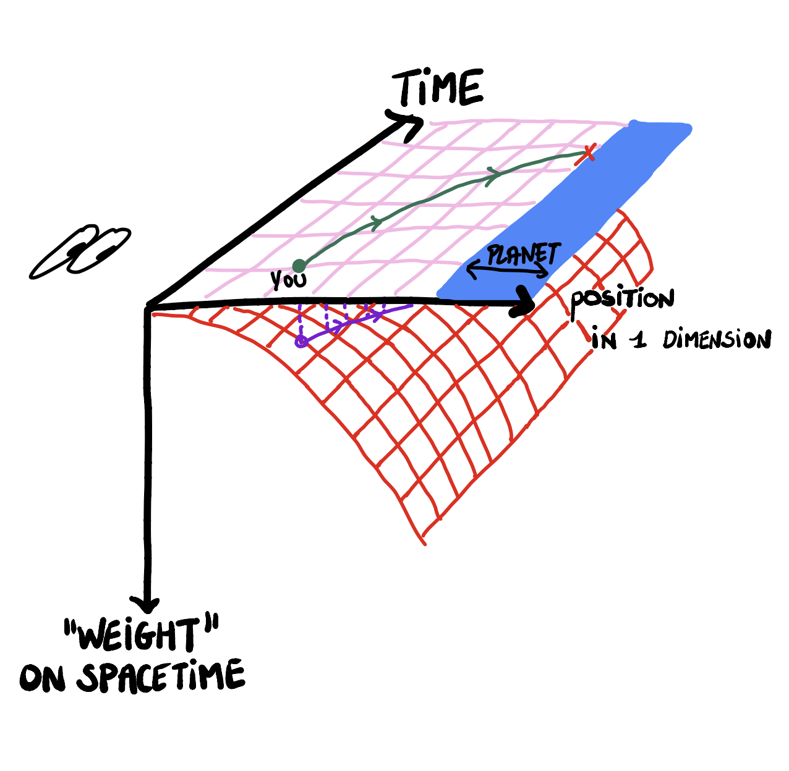
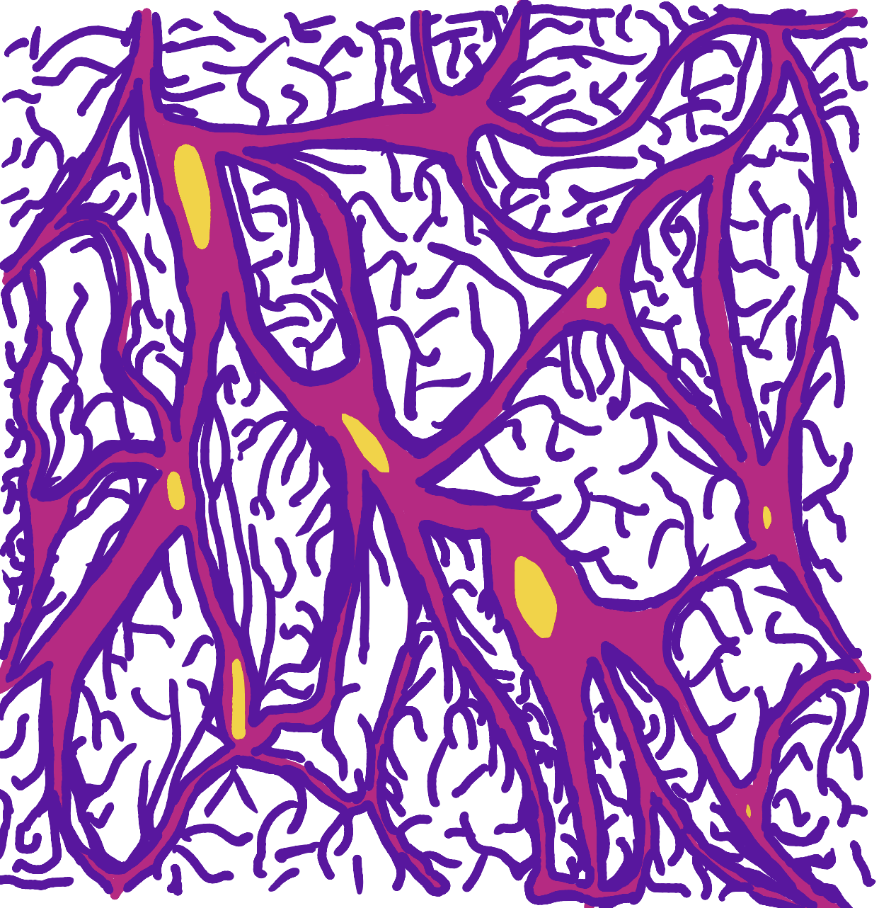
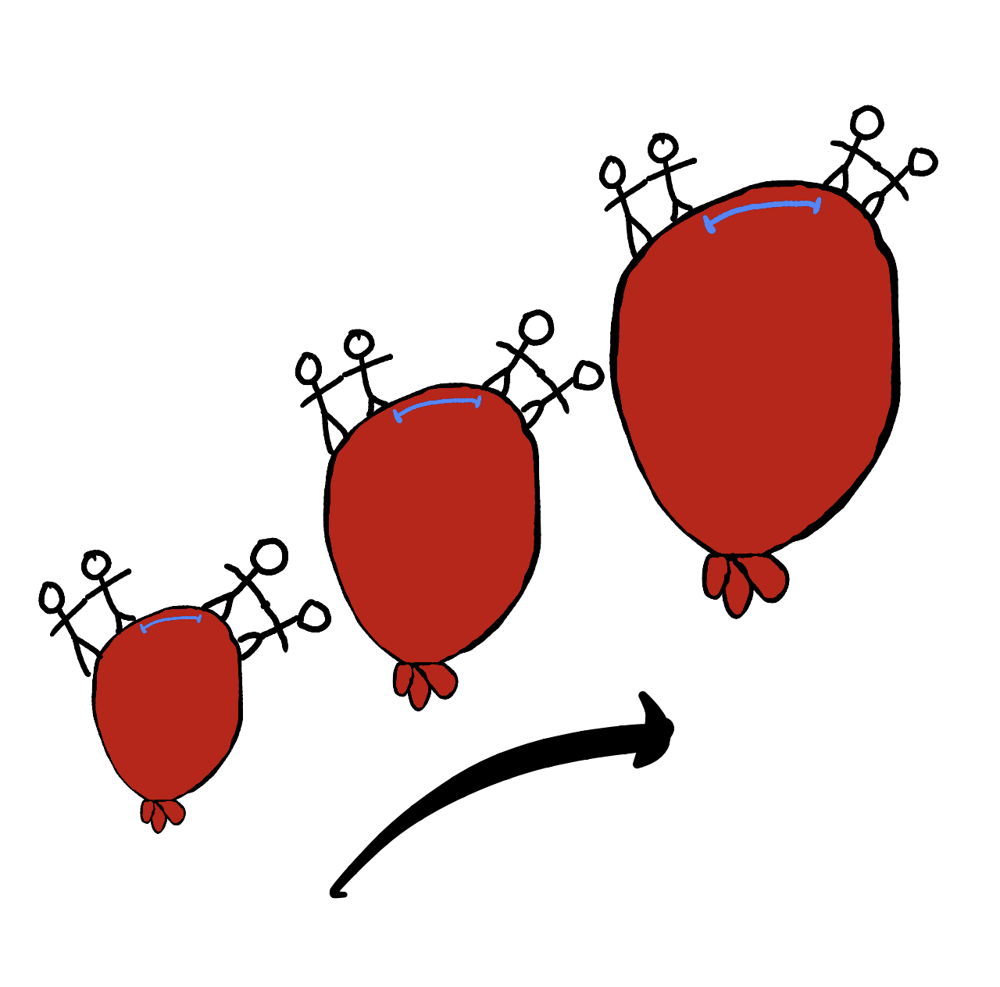
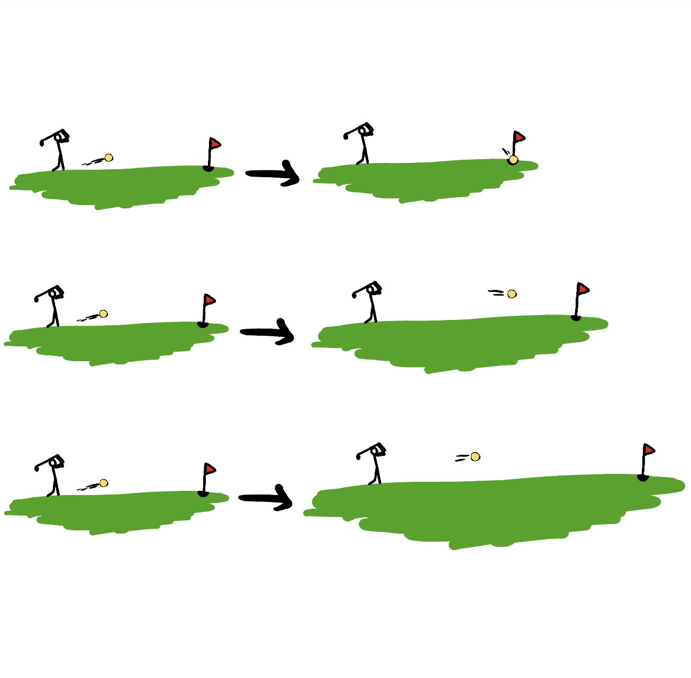
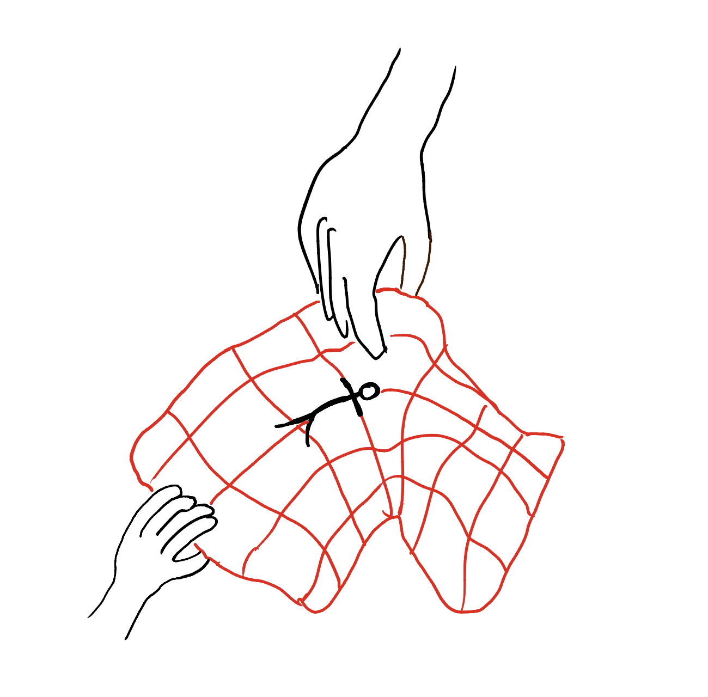
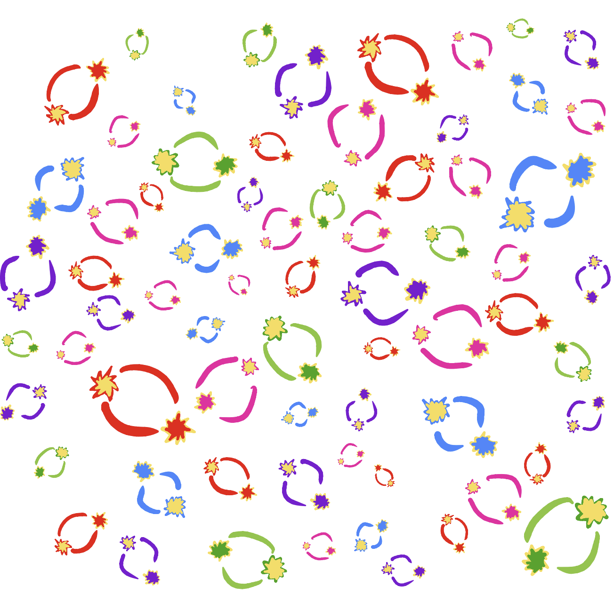
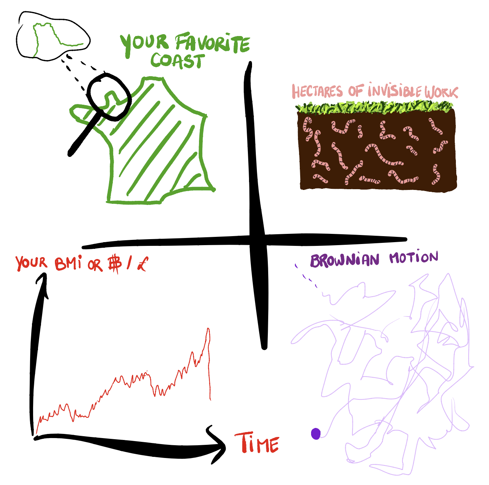
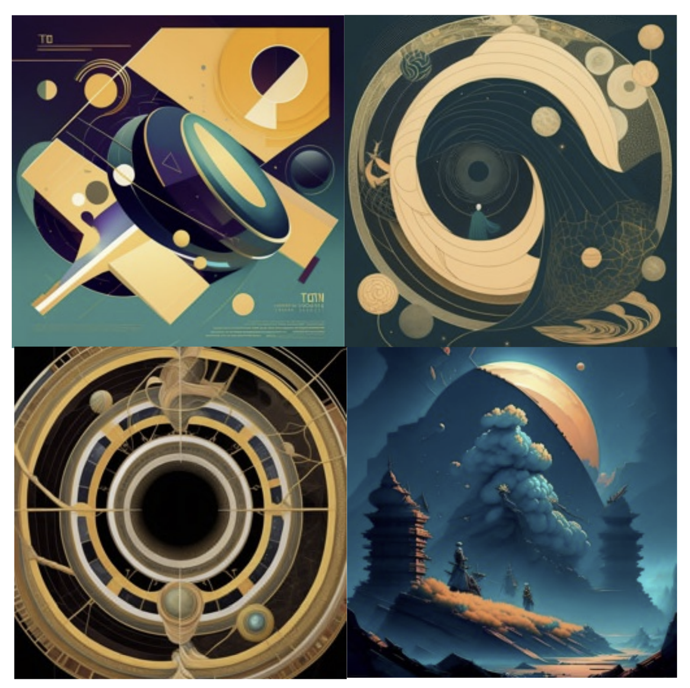

My Thesis in 12 sketches.
Long live the travellers

Gravity is simple: objects with a mass attract each other. The closer together they are or greater their masses, the stronger the attraction. However, this is only an approximation of reality. There is also an effect on time: time doesn’t pass the same way for everyone. General Relativity (GR) is the theory which calculates those effects. Take the case of these three humans: a second for one of them (the mountain or satellite guy vs the ground one) might be slightly longer for an another.
The difference between their clocks is due to the difference between their speeds and the gravitational force they endure (both slowing down time perception). This is not a noticeable effect on our planet, too light. Increase the mass of the planet and the difference of the speeds, the effect will become bigger. Still, GPS would not have today’s accuracy if those effects were not accounted for.
Fast Lives

So, people can have different beating rate for their clocks: your GR speed is your speed through space plus your speed through time. This speed is how fast you feel time. All theories have to pre-suppose something they can’t prove: in GR the speed of light is assumed to be always the same wherever the measure is done and the total time+space speed of any object is equal to the speed of light.
GR’s Maths suggest that we live on a sheet of paper (but 4 dimensions in reality, not 2) that can be bent when there is a massive object on it. When you fall from space to a planet, it is the same as going along a slide that leads to the planet. When you look at the curve of the slide, you can see that the notion of space and time depends on where you are (but also when). A curved line is indeed longer than a straight one: that explains why different people experience different travel times in space and time. You or anything (planets, blackholes, gas etc, but also light) undergo the curve of spacetime and in return also bend it. Still here? Good.
Stars but not celebrities

The Earth is one of the 8 planets orbiting around a star – our sun. Each of them has additional movements: they rotate around a North-South axis and this axis also slightly oscillates. The orbits are all almost circles, towards the same direction (except Venus and Uranus), and all in the same plane. Since all planets used to be part of the same cloud of matter orbiting around the sun, their numerous common traits are not surprising!
Gravity is not specific to our system. Our planet(s) and star have nothing special either. The same setup could exist for the ~100 billion stars in our galaxy, the Milky Way. Astronomists calculated at least 1 planet per star on average: a lot of possibilities for space colonies. However, it would take 100 000 years for us to travel across even in the best case (at light speed!), to which you add detours around the supermassive blackhole in the middle of our galaxy: Sagittarius A*. Supermassive black holes are also typical features of galaxies, at their center where matter collapses.
Moses in a cosmic sea?

Let’s keep zooming out, we haven’t reached the scale of Cosmology yet, but we’re about to. The Milky Way belongs to a supercluster of galaxies called ‘Virgo’; a million times bigger. Some movements of those galaxies have been measured from Earth. In 1929, Edwin Hubble measured that some galaxies are moving away from us and the supercluster, the further, the fastest. It seems that distances everywhere become bigger: this is a proof that the universe is expanding.
However, within a certain distance to us, galaxies stick with us and the cluster and might even get closer. We will see that it comes from the competition between two forces: gravity and expansion, both described with GR. If the expansion continues, it is difficult to predict exactly how many galaxies will stay within Virgo; it probably will be separated into a hundred subclusters of galaxies, which could cluster more until merging into super galaxies.
Cosmic Web

The biggest scale we can probe from observations is called the ‘cosmic web’, 10 million of Virgo-like superclusters. Their distribution in space has a clear web pattern: superclusters have clustered with others thanks to gravity, but also empty bubbles have formed thanks to the expansion of the universe.
How is this possible? It feels like there is something growing or pushing things away that we can’t see. But we can see it and it’s everywhere: matter, light, anything with an energy dilates space and this is something we learn by writing the GR equation for the universe. However, there is also something accelerating that expansion, which is why we think that expansion won’t stop and reverse. None of the usual types of matter, light or forces allow that: can you imagine something with a negative pressure? something else is out there but nobody knows what it is and that’s why it is now called dark energy. We only know some of its properties and its quantity in the universe (~70%!).
A backward history of time

One of the simplest ways to represent expansion is by using an (inaccurate) inflating balloon. It shows what you see from the center of the balloon, you (galaxy) and your surrounding friends (galaxies). Some of your friends are far enough to stand on the surface of the balloon: that’s the expansion. Some of them know each other and hold their hands or hug: that’s gravity. You can imagine that expansion hampered some of them to grab the hands of others or yours, or even broke some handshakes.
So, if the universe is currently a big, inflated balloon; what happens when going back in time? Do you get to hug all your friends? Can points hug? Well, that’s basically the origin of times and it’s complicated. What is even the right way to go back in time? This is researcher’s work to find out and it all depends on the content of the universe in time. For now, we discovered that all types of usual matter, light and force disappear into a hot plasma before we reach the point-like balloon. People thought the Big-Bang was there: let me explain you why it’s not.
The failure of the old Big-Bang against expansion in 18 holes

We measure distances by measuring the travel of light, the fastest speed allowed. But how fast is the expansion? I mentioned earlier that the further away an object is from us, the faster it recedes: is there a distance after which it could be faster than light? No. Expansion doesn’t change the velocity of galaxies but rather makes the journey longer between them. That still means that light sent from us or some far neighbour might have to compete with an increasing distance, and sometimes expansion wins. Can you imagine playing golf on an expanding green… Sometimes communication (i.e., light reaching from one area to another) is impossible between two regions of the universe. That’s the reason why even with powerful tools we can’t see the whole universe.
We still manage to receive microwave signals from the Big-Bang plasma, still travelling today, coming from all directions. The analysis of this signal suggested that places that were too far away from each other to have ever been in contact at that time, had actually interacted (for instance with the same light). From that discovery in the 60s, people decided we needed a pre-Big-Bang (or an extension) to allow a ‘contact’ time and called it inflation.
Hands-on Inflation

There isn’t really a shared way to imagine what inflation is like: all particles and forces we’re aware of today aren’t there. As it is mainly described by GR, its descriptions can’t go without mathematics. The role of many researchers is to propose a mathematical model for inflation and calculate what it gives at later times, at the plasma time and even until today. Finally, you compare your prediction with the measured signal: you score models, and you keep the best (the closest to measurements): that’s what modern science is.
The imprints of inflation on the microwave signal are subtle but tell a lot about the properties of ‘what’ was there during inflation. We now know that Inflation mainly saw a type of dark energy – called inflaton- dominating, a type of negative pressure. Again, such a fluid triggers expansion, here the fastest in the universe’s history: size multiplied by 1[insert 138 zeros], in approximately 0.[insert at least 32 zeros]1 seconds. Similarly, to today’s universe expansion, it is like being on a 2D sheet of spacetime: it feels like some higher dimensional being was stretching the sheet everywhere around you. The main difference with today’s expansion is that the universe was small and so subjected to quantum effects.
To be or not to be quantum

Matter and other fluids of the present and the past, and so particles they’re made of, must have had a slightly different history depending on the location because today’s sky observation says so; the universe is not homogeneous when you zoom enough, e.g., there are different number of galaxies for different locations. The origin (in time) of that inhomogeneity is thought to be quantum physics during Inflation. Backward in time, the universe might reach scales below what we cannot see with our eyeballs and even smaller. But in that case, things no longer follow what is called classical physics.
Classical physics is the pre-determined science of what we see everyday; knowing enough details about a system at a given time (mass, position, velocity…), you can predict the evolution of the system in time and what you will measure. Sometimes, you are missing information about the system, and you must assume different scenarios for the start and so the evolution. Each scenario has a probability; here for instance an unprecise or incomplete measure of the initial position and velocity gives a lack of knowledge also later.
Feeling quantum

The easiest way to represent it is, again, by suggesting that there is something at play in an extra-dimension. We usually introduce extra features for the probability in space and time; allowing probabilities to have an angular dimension called ‘phase’. Two particles’ can thus interact like waves, but with more complexity, e.g., their interference (sum) depends a lot on their angle and can annihilate each other’s probability or strengthen it.
For a given quantum probability wave, some equations and principles dictate which shapes are allowed in space and time. For instance, a wave can have a concentrated probability in space (2nd sketch) but implies a super spread probability for all allowed velocities (3rd sketch). The opposite is also allowed, but both positions and velocity probabilities too precisely simultaneously known is impossible: quantum uncertainty at play.
No such thing as empty

Back to the tiny but inflating universe, quantum physics at play. Physicists think that, far enough in the past, the universe made of inflaton could be in its lowest energy level, called vacuum. However, quantum vacuum doesn’t strictly mean ‘0’ of anything, as opposed to classical physics, because even at the lowest level quantum physics show energy fluctuations in that vacuum.
Theoretically, quantum vacuum cannot have a strict 0 energy, otherwise it would contradict the quantum uncertainty. If we define vacuum as the absence of any measured particle; unmeasurable particles pairs are allowed to emerge from nothing and annihilate before you have time to measure them. Those particles are called ‘virtual’, but it doesn’t mean they don’t exist; they can be measured indirectly by measuring other real particles interacting with them. In all cases, we know for sure that there is some energetic process down there bringing fluctuations to the young universe, which will today give fluctuations in the sky (e.g. number of galaxies).
Mind the gap between the world and the sub-world

The last piece of the puzzle is about scaling. As I explained, there are everyday situations where we miss information and must consider all possible outcomes with probabilities. That classical uncertainty is due to a lack of information about the system. The worst type comes from a scale smaller than the scale of study. Searching for mathematics or general descriptions of; the shape of France, the grass and plants cycle, the evolution of your weight or bitcoins or of a molecule; all of those might require the consideration of what is happening at smaller scales; Normandie, worms as organic recyclers, measure noise, all individuals in a market, random collisions with other particles etc. Some of them can be modeled as random background noise with defined probabilities, it’s called stochastic modeling.
Most of times, there is a scale at which you can stop zooming because it has a negligible influence compared to your desired precision. What if we were doing that just before zooming into Quantum Physics to study cosmic inflation?
“Non-linear general relativity for stochastic inflation”

You now have everything you need to understand my PhD. Because General Relativity and Quantum Physics are not compatible but exchanging phenomena, I want to study the propagation in time of the initial quantum fluctuations of inflation by treating it as a stochastic noise when it becomes classical and so compatible with General Relativity. If this works, that will allow me to predict the distribution of today’s types of matter in the universe, for instance the patterns of clusters and galaxies, but also to validate or rule out certain types of starts for the universe.
If it is still blurry, contact me for questions or meditate with those chatGPT-generated illustrations of my thesis’ keywords! Thanks for reading.
Click here for the french version 
Many thanks to A. McWhinnie for precious advice.